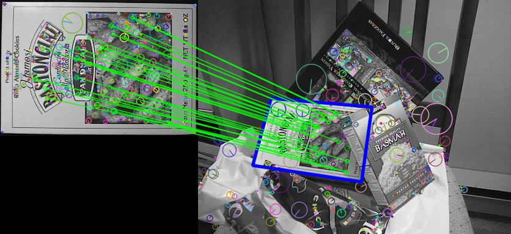
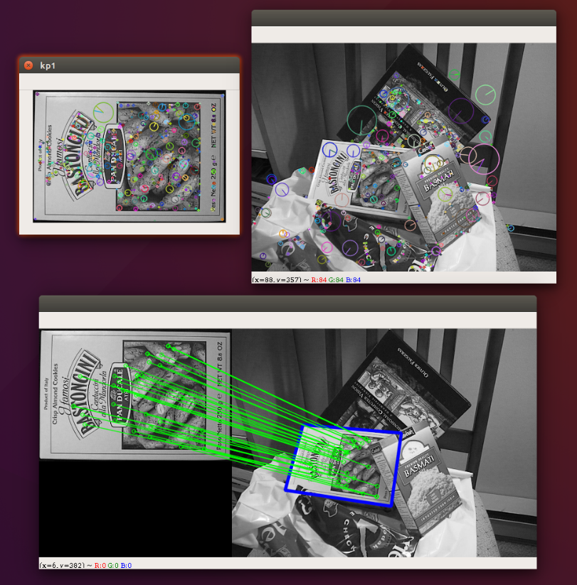

09-使用特征匹配查找目标¶
- 接下来，我们将结合使用特征匹配及单应性矩阵在一张复杂图片中查找目标对象，并将其圈起来
理论概述¶
我们之前在trainImage中找到了一些特征点，然后在另一张queryImage中同样找到了这些特征，并进行了最佳的匹配。换句话说，我们在一张杂乱无章的图片中定位到了一个物体的一部分信息，这些信息足够我们在queryImage中精确地定位到这个物体的位置。
为此了定位这个物体的位置，我们可以使用calib3d模块中的函数，即cv2.findHomography()，我们将两个图像中对应的特征点的集合传给这个函数，它将找到该对象的透视变换矩阵。然后，我们可以使用cv2.perspectiveTransform()执行这个变换进而找到对象。找到这个转换矩阵至少需要四个正确的点。匹配时可能会出现一些可能影响结果的错误。为了解决这个问题，我们可以使用RANSAC或LEAST_MEDIAN算法。
代码实现¶
通过SIFT查找特征点，并使用FLANN进行特征匹配，找到最佳匹配结果
import numpy as np
import cv2
# 最小匹配数
MIN_MATCH_COUNT = 10
GOOD_MATCH_PERCENT = 0.25
im1 = cv2.imread('./data/box.png', cv2.IMREAD_COLOR) # trainImage
im2 = cv2.imread('./data/box_in_scene.png', cv2.IMREAD_COLOR) # queryImage
img1 = cv2.cvtColor(im1, cv2.COLOR_BGR2GRAY)
img2 = cv2.cvtColor(im2, cv2.COLOR_BGR2GRAY)
# Initiate SIFT detector
sift = cv2.xfeatures2d.SIFT_create(500)
# find the keypoints and descriptors with SIFT
kp1, des1 = sift.detectAndCompute(img1, None)
kp2, des2 = sift.detectAndCompute(img2, None)
print("kp1: {}, kp2: {}".format(len(kp1), len(kp2)))
# 这里显示前做一次拷贝，避免影响最后使用
im1_copy = im1.copy()
cv2.drawKeypoints(im1_copy, kp1, im1_copy, flags=cv2.DRAW_MATCHES_FLAGS_DRAW_RICH_KEYPOINTS)
cv2.imshow("kp1", im1_copy)
im2_copy = im2.copy()
cv2.drawKeypoints(im2_copy, kp2, im2_copy, flags=cv2.DRAW_MATCHES_FLAGS_DRAW_RICH_KEYPOINTS)
cv2.imshow("kp2", im2_copy)
查找匹配结果
# FLANN parameters
FLANN_INDEX_KDTREE = 0
index_params = dict(algorithm=FLANN_INDEX_KDTREE, trees=5)
# 指定索引中的树应该递归遍历的次数。值越高，精度越高，但是也越耗时
search_params = dict(checks=50) # or pass empty dictionary
# 创建Flann匹配器
flann = cv2.FlannBasedMatcher(index_params, search_params)
# 执行匹配
matches = flann.knnMatch(des1, des2, k=2)
# store all the good matches as per Lowe's ratio test.
good = []
for m, n in matches:
if m.distance < 0.7 * n.distance:
good.append(m)
设置条件要求最少10个匹配结果，否则提示没有足够的匹配器结果。
good保存了所有匹配组的query索引和train索引信息，则如果结果个数符合要求，我们将匹配成功的所有的关键点坐标提取出来。将他们交给cv2.findHomography()函数，来计算透视变换矩阵。一旦我们得到了3×3的变换矩阵，就可以使用它将queryImage的角转换为trainImage中的对应点。
if len(good) > MIN_MATCH_COUNT:
# 分别取出匹配成功的queryImage的所有关键点 src_pts 以及trainImage的所有关键点 dst_pts
src_pts = np.float32([kp1[m.queryIdx].pt for m in good]).reshape(-1, 1, 2)
dst_pts = np.float32([kp2[m.trainIdx].pt for m in good]).reshape(-1, 1, 2)
# 使用findHomography并结合RANSAC算法，避免一些错误的点对结果产生影响
M, mask = cv2.findHomography(src_pts, dst_pts, cv2.RANSAC, 5.0)
# 转成一行多列的。描述了对应索引位置的匹配结果是否在结果区域内
matchesMask = mask.ravel().tolist()
h, w = img1.shape
# 创建一个queryImage的四个点轮廓图
pts = np.float32([[0, 0], [0, h - 1], [w - 1, h - 1], [w - 1, 0]]).reshape(-1, 1, 2)
# 对这个轮廓图执行透视变换
dst = cv2.perspectiveTransform(pts, M)
# 将透视变换后的点连成封闭的线框绘制到trainImage上。
im2 = cv2.polylines(im2, [np.int32(dst)], True, (255, 0, 0), 3, cv2.LINE_AA)
else:
print("Not enough matches are found - %d/%d" % (len(good), MIN_MATCH_COUNT))
matchesMask = None
最后，我们回回执那些匹配成功的线条
draw_params = dict(matchColor=(0, 255, 0), # draw matches in green color
singlePointColor=None,
matchesMask=matchesMask, # draw only inliers只绘制掩膜区域以内的匹配
flags=2)
img3 = cv2.drawMatches(im1, kp1, im2, kp2, good, None, **draw_params)
cv2.imshow('matches', img3)
cv2.waitKey(0)
结果输出¶

